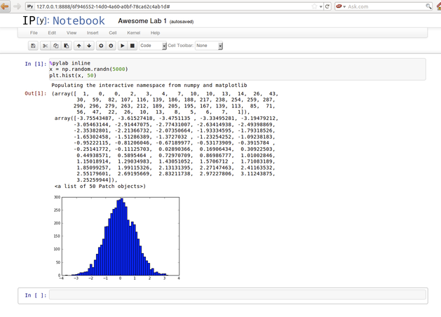
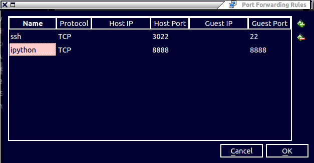

Setting up a Virtual Machine for IPython/IJulia Notebook
I recently wrote up the instructions for setting up a Virtual Machine for doing the labs in CS70: Discrete Math and Probability Theory, and I thought other people not in the class may find this useful as well.
Here's a pdf copy of all the instructions below for those who want a handy reference.
Installation Instructions (for saasbook VM users)
(borrowed heavily from the installation instructions in CS194-16: Introduction to Data Science)
- Follow the instructions available here to install VirtualBox, and the virtual machine image. The virtual machine image already includes most of the software necessary to run the code. We will install extra packages below.
Note: If you have troubles installing Virtualbox on your Operating System and/or booting up the virtual machine, Google will be your best friend. We only provide official support after you have been able to get past the login screen and are inside the virtual machine - Start up the machine. Enter
saasbookas the password. - Launch a terminal. (Third icon in the launcher on the left.)
- Grab a copy of
setup.bashhere or from this Dropbox link, and save it on the virtual machine. You can either do this via Firefox, or in the terminal:wget https://www.dropbox.com/s/4qrbkw7joebygxb/setup.bash - Run
sudo bash setup.bash. Make sure you are in the same directory assetup.bashbefore executing this command. Enter the same password again to install lots of packages. - Grab a coffee or something - it will take a few minutes to build/install these components. Also if you see warnings etc. on the screen, don’t worry, that is expected.
STOP: If you are only interested in working in Python, you have now installed everything you need. If you are interested in using Julia, skip the rest of this section and move on to the Julia section.- To test that everything works correctly, run
ipython notebook.
In the browser window that pops up, create a new notebook, and enter the following in the first cell:
%pylab inline
x = np.random.randn(5000)
plt.hist(x, 50)
You should see a beautiful normal distribution in the output, as seen below. To exit, simply hit Ctrl+C, y, and close Firefox.

Julia/IJulia
Continue on if you are interested in working in Julia and IJulia.
- Type
juliain the command line to start the Julia REPL, and install IJulia with:Pkg.add("IJulia"). - Continue the installation with
Pkg.add("PyPlot")to install PyPlot, which is a plotting package for Julia based on Python's Matplotlib. - If the commands above returns an error, you may need to run
Pkg.update(), then retry it. To exit the Julia REPL, hit Ctrl+D To start the IJulia interface, run
ipython notebook --profile julia. In the browser window that pops up, create a new notebook, and enter the following in the first cell:using PyPlot x = randn(5000) plt.hist(x, 50);
You should see a beautiful normal distribution in the output, just like the picture above.
TeX and nbconvert
If you want to use the
nbconvertutility to convert your IPython/IJulia Notebook to pdf format, you will need to install some flavor of TeX. One way to do so is via thetexlivepackage. Be aware that the following command will download about 600 MB of software, which expands to over 1 GB. In other words, it will take averylong time to download and configure.sudo apt-get install texlive-latex-extra
You can always right click from the web browser and choose to print the notebook as PDF, which is much easier, though the formatting may be messed up. You can also look into other convert options here
Don't like working in the VM?
(Credit goes to Yan Zhao, Victor Lymar, and Sridatta Thatipamala - current CS194-16 students)
Good news - you can still work on your local machine using your own browser! Follow the instructions below.
Setting up SSH
- Select your VM inside VirtualBox Manager.
- Go to Settings > Network > Advanced > Port Forwarding.
- Add a new rule with "
name => ssh, protocol => TCP, Host Port => 3022, Guest Port => 22", and everything else BLANK. - INSIDE your VM, install the ssh server with
sudo apt-get install openssh-server - SSH Command:
ssh -p 3022 saasbook@127.0.0.1.
SCP command:scp -P 3022 saasbook@127.0.0.1:~/VM_DIRECTORY_NAME LOCAL_DIRECTORY_NAME - If you didn't change, the password is
saasbook - Optionally, you can look into SSH-ing without a password. There are many tutorials on the web, one of which can be found here.
Accessing the notebook from host system
- Add another rule to Port Forwarding with guest port as 8888, and host port as 8888.
To help double check that you get everything correctly, here's a screenshot of what you suppose to see after adding the above rule

- To start the notebook, run
ipython notebook --no-browser --ip='0.0.0.0'instead since the guest system won't expose127.0.0.1to other machine in the LAN. - Open
localhost:8888on your host browser, you will see the notebook page. Congrats, you can now work in your local browser!
Headless VM
Now you may wonder, if I can do all of the above tricks, why do I need to open a window of the guest system. The answer is you don't have to :)
Run the following command in terminal to start a headless VM:
VBoxManage startvm "name_of_vm" --type headless
where name_of_vm should be the name of the virtual machine as in VirtualBox Manager
- To turn off the vm, just run
sudo poweroffin the ssh session.
ssh config file
If the ssh command is too long to type, put everything in a config file.
- The config file is
~/.ssh/config, if it is not there, just create one. Put the ssh host in the config file in the following format, notice the blank before User, Hostname, port is a tab:
Host vm70 User saasbook Hostname 127.0.0.1 Port 3022Just type
ssh vm70to ssh into the vm.
Hope some of you may find this helpful for doing their data science work! If you spot an error, send me an email (preferred), comment here, or raise an issue on Github.
Update 04/05/2013
As of today, the CS 70 course staff has generously offered to host the VM with every package preinstalled on the official course website. Just download the image, import it into VirtualBox, and enjoy!